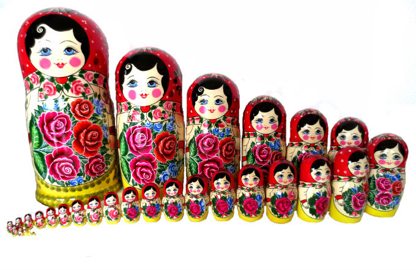

Matriochka Classique - Traditionnelle ( 30 pieces )
650 EUROS
Une poupée russe est une figurine creuse en bois et façonnée au tour,
qui s'ouvre en deux horizontalement, révélant ainsi à l'intérieur une figurine similaire de taille plus petite.
Cette seconde figurine renferme elle-même une autre figurine, et ainsi de suite. cette série comporte 30 pièces,
est façonnée à la main.
C'est une série Haut de gamme.